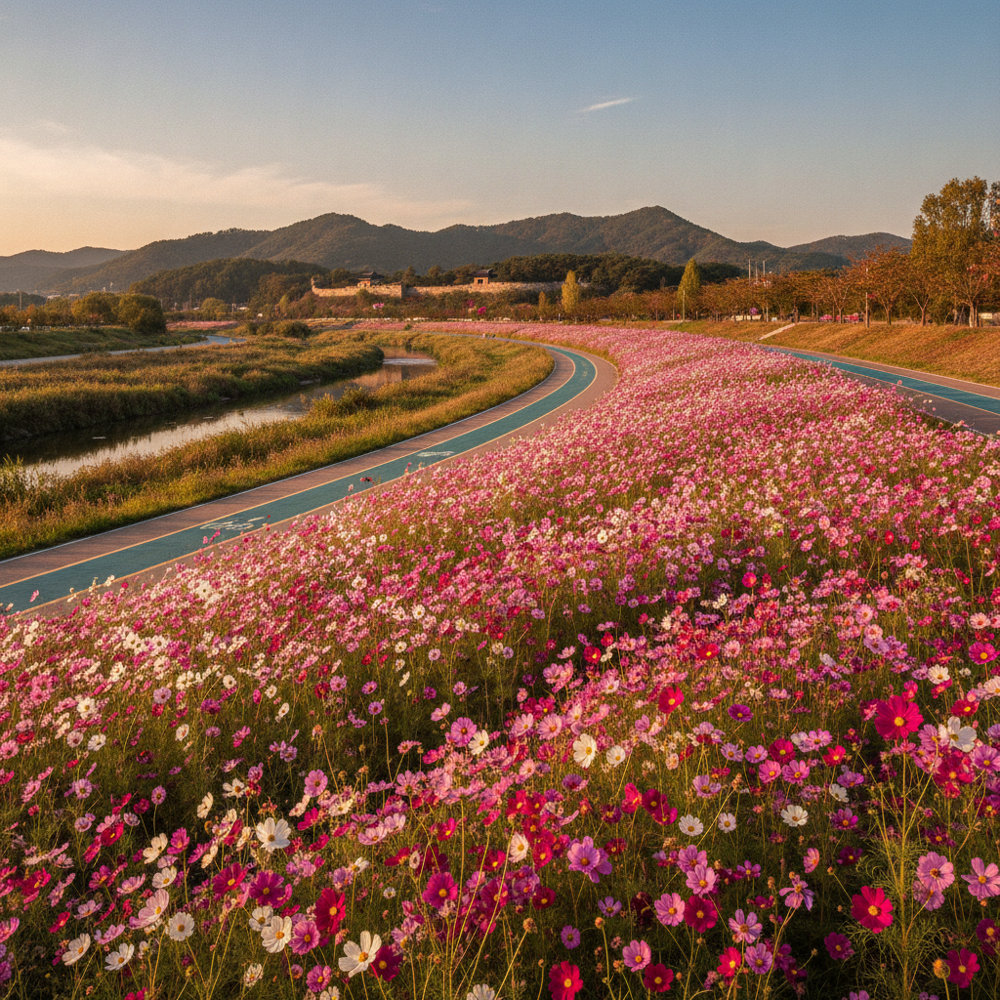

고양 행주산성·창릉천 코스모스 가을 산책 코스 — 주차 요금 비교와 둘레길 소요시간 체크리스트
초가을 선선한 강바람을 맞으며 역사 유적과 활짝 핀 가을꽃을 함께 즐기기에 경기도 고양시 행주산성과 창릉천 수변길만 한 곳이 없습니다. 행주산성은 입장료가 전면 무료이며, 제1·제2 공영주차장 주차 요금은 승용차 기준 1일 종일권이 2,000원에 불과해 가성비 최고의 수도권 당일치기 나들이 명소입니다.
9월 하순부터 10월 초순까지 창릉천 자전거 도로를 따라 펼쳐지는 분홍빛 코스모스 군락과 행주산성 덕양정 정상에서 내려다보는 한강 파노라마 노을 뷰는 가을 정취를 만끽하게 해줍니다.
주차장별 위치 및 요금 비교표와 왕복 소요시간대별 둘레길 추천 코스, 그리고 행주산성 명물 원조 국수거리 꿀팁을 체크리스트로 확인해 보세요.

고양 창릉천 수변을 따라 분홍빛으로 활짝 핀 가을 코스모스 꽃길 / AI 제작 이미지
01 | 한강 노을과 가을 코스모스가 어우러진 수도권 역사 명소 행주산성
경기도 고양시 덕양구 행주로에 자리한 행주산성(사적 제56호)은 해발 124m의 덕양산 능선을 따라 축조된 포곡식 토축 산성입니다. 서울 마포나 은평, 일산 도심에서 차로 20~30분이면 도착할 수 있어 접근성이 매우 뛰어납니다.
한강 하류의 물길과 방화대교의 붉은 아치, 멀리 여의도 빌딩 숲까지 시원하게 조망할 수 있는 천혜의 조망 명소로 손꼽히며, 특히 가을철 해질녘 서해로 넘어가는 붉은 석양 노을은 수도권 최고의 장관을 연출합니다.
2026년 현재 입장료는 무료로 개방되어 운영되고 있어 시민들의 발길이 끊이지 않으며, 인근 창릉천이 한강과 합류하는 지점의 수변 생태공원까지 산책로가 유기적으로 연결되어 있어 가을 걷기 여행지로 이상적인 환경을 갖추고 있습니다.
02 | 9월 하순부터 만개하는 창릉천 강변 코스모스 꽃길 개화 현황
행주산성 초입에서 한강 방면으로 이어지는 창릉천 둔치는 고양특례시가 매년 정성껏 가꾸는 대표적인 가을꽃 군락지입니다. 9월 중순부터 꽃망울을 터뜨리기 시작한 코스모스는 9월 하순에 접어들며 절정을 맞이합니다.
창릉천 자전거길과 보행 데크를 따라 분홍색, 자줏빛, 순백색의 코스모스가 끝없이 물결치며 가을바람에 한들거리는 모습은 보는 이의 마음을 단숨에 사로잡습니다.
꽃밭 사이사이로 흙길 산책로와 원목 벤치, 가을 감성 포토존이 다채롭게 마련되어 있어 주말 가족 나들이객이나 연인들의 인생 사진 명소로 각광받고 있습니다. 산책로는 평지로 완만하게 이어져 유아차나 휠체어도 수월하게 이동할 수 있습니다.
03 | 행주산성 탐방로 구간별 코스 안내와 정상 덕양정까지의 소요시간 비교
행주산성 정문인 대삼문을 통과하면 완만한 아스팔트 포장길과 울창한 숲길 데크가 이어집니다. 자신의 체력과 동반자에 맞추어 최적의 코스를 선택할 수 있도록 주요 산책 구간을 비교해 드립니다.
| 코스 명칭 |
주요 이동 동선 |
편도 거리 / 소요시간 |
경사도 및 보행 환경 |
주요 관람 포인트 |
| 정상 직행 코스 |
대삼문 → 권율장군동상 → 쉼터 → 행주대첩비(정상) |
약 1.0km / 도보 20~25분 |
완만한 포장도로 (유아차 가능) |
권율 장군 동상, 덕양정, 한강 조망 |
| 토성 둘레길 코스 |
대삼문 → 권율동상 → 토성성벽길 → 덕양정 |
약 1.5km / 도보 35~40분 |
흙길 및 목재 계단 (보통 난이도) |
복원된 삼국시대 토성, 가을 참나무 숲길 |
| 역사순환 풀코스 |
대삼문 → 충장사 → 토성길 → 대첩비 → 역사공원 |
약 3.2km / 도보 1시간 10분 |
복합 구간 (숲길 + 수변 데크) |
충장사 참배, 충의정, 한강 역사공원 일주 |
어린이나 어르신과 함께라면 경사가 완만하고 바닥이 매끄러운 정상 직행 메인 도로를 추천하며, 가을 숲의 피톤치드를 깊게 들이마시고 싶다면 토성길 능선 트레킹 코스가 제격입니다.
행주산성 정상 덕양정에서 바라본 붉은 한강 석양과 방화대교 전경 / AI 제작 이미지
04 | 임진왜란 3대 대첩지 행주대첩의 역사적 숨결과 충의정 영상관
행주산성은 1593년(선조 26년) 임진왜란 당시 전라순찰사 권율 장군이 민·관·군·승병 및 부녀자들까지 총 2,300여 명의 결사대로 3만 왜군을 격퇴한 구국의 성지입니다.
부녀자들이 긴 치마를 잘라 돌을 날라 전투를 도왔다는 '행주치마'의 전설이 깃든 현장으로, 정상에는 선조 35년에 세워진 행주대첩비각(구비)과 1963년 높이 15.2m로 우뚝 솟아오른 행주대첩비(신비)가 자리하고 있습니다.
정상 바로 옆 '충의정' 영상관에서는 행주대첩의 치열했던 전투 상황과 신기전, 변이중 화차 등 당시 첨단 무기의 활약상을 담은 다큐멘터리 영상(약 15분 소요)이 상시 무료 상영되므로 자녀를 동반한 가족이라면 생생한 역사 교육의 장으로 꼭 둘러보시길 권합니다.
05 | 행주산성 공영주차장 요금 체계 및 주말 무료 주차 꿀팁 비교표
행주산성에는 정문 바로 앞의 제1공영주차장과 아래쪽 창릉천 변에 위치한 제2공영주차장이 마련되어 있습니다.
| 주차장 구분 |
위치 및 수용 규모 |
운영 시간 |
주차 요금 (일반 승용차) |
특징 및 이용 꿀팁 |
| 제1공영주차장 |
행주산성 매표소 대삼문 정문 앞 (약 150대) |
09:00 ~ 18:00 |
종일 정액 2,000원 (후불/선불) |
산성 진입이 가장 편리하나 주말 11시~14시 조기 만차 |
| 제2공영주차장 |
산성 입구 교차로 하단 (약 200대) |
09:00 ~ 18:00 |
종일 정액 2,000원 (경차 1,000원) |
주차 공간이 비교적 여유로우며 정문까지 도보 5분 소요 |
| 행주산성 역사공원 주차장 |
한강 변 역사공원 수변 (약 100대) |
24시간 상시 개방 |
무료 개방 |
한강 피크닉 및 창릉천 코스모스길 접근 용이, 주말 혼잡 |
주말 나들이 시 주차비를 아끼고 한강 산책까지 겸하고 싶다면 하류의 행주산성 역사공원 무료 주차장에 주차한 뒤, 수변 둘레길을 따라 행주산성 정문으로 걸어 올라가는 동선이 매우 훌륭한 대안이 됩니다.
06 | 한강 뷰를 한눈에 담는 행주산성 역사공원 수변 데크길 산책
행주산성 덕양산 남쪽 기슭 한강 변에 위치한 '행주산성 역사공원'은 과거 군사 철책선이 둘러쳐져 민간인 출입이 통제되던 공간을 2016년 시민의 휴식처로 전면 개방한 수변 생태공원입니다.
강물을 바로 곁에 두고 걸을 수 있는 친수 데크로드와 잔디마당, 평화의 쉼터 등이 정갈하게 꾸며져 있어 돗자리를 펴고 가을 피크닉을 즐기기에 안성맞춤입니다.
수변을 따라 낚시꾼들의 고즈넉한 풍경과 한강을 건너는 가을 철새들의 군무를 감상할 수 있으며, 방화대교 붉은 상판 아래로 시원하게 뻗은 자전거 전용도로와 이어져 여유로운 가을 힐링을 선사합니다.
행주산성 국수거리의 푸짐한 잔치국수와 매콤한 비빔국수 상차림 / AI 제작 이미지
07 | 행주산성 먹거리 명물 잔치국수와 원조 장어구이 식도락 추천
행주산성 나들이의 빼놓을 수 없는 즐거움은 산성 입구 맛집 촌에서 맛보는 식도락입니다. 이곳의 가장 독보적인 먹거리는 단연 '행주산성 원조 국수거리'입니다.
남해안 멸치를 진하게 우려내어 깊고 구수한 감칠맛을 내는 잔치국수(7,000원 안팎)와 입맛을 돋우는 매콤달콤한 양념장에 채소를 듬뿍 얹어 비벼 먹는 비빔국수(7,500원 안팎)는 세숫대야만 한 커다란 양은그릇에 산더미처럼 푸짐하게 담겨 나옵니다.
자전거 라이더들과 등산객들의 든든한 한 끼로 사랑받으며, 곱빼기 요청 시 추가 요금 없이 면을 넉넉히 리필해 주는 정겨운 인심이 살아있습니다. 특별한 보양식을 원한다면 한강 하구의 전통을 이어온 참숯 장어구이 전문점(2인 6만~8만 원 선)을 찾는 것도 좋습니다.
08 | 대중교통(지하철 화정역·능곡역 연계 버스) 및 자전거 라이딩 접근법
자가용이 없더라도 대중교통을 이용해 행주산성을 편리하게 방문할 수 있습니다.
지하철 3호선 '화정역'이나 경의중앙선·서해선 '능곡역'에서 고양시 마을버스 011번 또는 012번으로 환승하면 약 15~20분 만에 행주산성 정문 앞 정류장에 닿을 수 있습니다. 서울 영등포나 신촌 방면에서는 85번, 1082번 등 광역버스를 이용해 인근 자유로 입구에서 도보로 접근 가능합니다.
또한 행주산성은 한강 자전거 도로와 평화누리 자전거길이 교차하는 라이딩의 성지이기도 합니다. 아라뱃길이나 여의도에서 한강 북단 자전거 도로를 타고 창릉천을 건너면 바로 산성 입구에 도달하므로 가을철 자전거 데이트 코스로도 최적입니다.
09 | 가을 당일치기 행주산성·창릉천 산책 준비물과 안전 수칙 체크리스트
가을철 행주산성과 창릉천 꽃길을 안전하고 쾌적하게 관람하기 위한 필수 점검 사항을 정리해 드립니다.
📅 행주산성 가을 당일치기 추천 일정표
· 14:00 ~ 15:00 : 창릉천 코스모스 꽃길 산책 및 수변 포토존에서 가을 기념사진 촬영
· 15:00 ~ 16:30 : 행주산성 대삼문 입장 후 권율장군 동상과 토성 둘레길 걸어 덕양정 정상 등반
· 16:30 ~ 17:30 : 덕양정에서 시원한 한강 조망과 붉은 가을 노을 석양 감상 후 하산
· 17:30 ~ 18:30 : 산성 입구 국수거리에서 따뜻한 잔치국수와 비빔국수로 푸짐한 저녁 식사
💡 가을 산책 시 필수 체크리스트
1. 보행화 준비 : 토성 구간과 정상 오르막길이 있으므로 굽 높은 구두보다는 편안한 운동화나 트레킹화를 착용하세요.
2. 체온 조절 겉옷 : 강바람이 불어오는 정상과 수변 공원은 일몰 후 기온이 급격히 떨어지므로 바람막이나 카디건을 챙기세요.
3. 입장 마감 시간 확인 : 행주산성 하절기(3~10월) 퇴장 시간은 18:00이며, 입장 마감은 17:00이므로 늦지 않게 도착하세요.
4. 반려동물 동반 규정 : 국가지정 문화재 구역 특성상 행주산성 내부에는 반려동물 입장이 제한되니(역사공원 야외는 목줄 착용 시 가능) 유의하세요.
#행주산성
#고양행주산성
#창릉천코스모스
#행주산성둘레길소요시간
#행주산성주차요금비교
#행주산성역사공원
#행주산성국수거리
#한강노을명소
#수도권가을산책코스
#고양당일치기여행